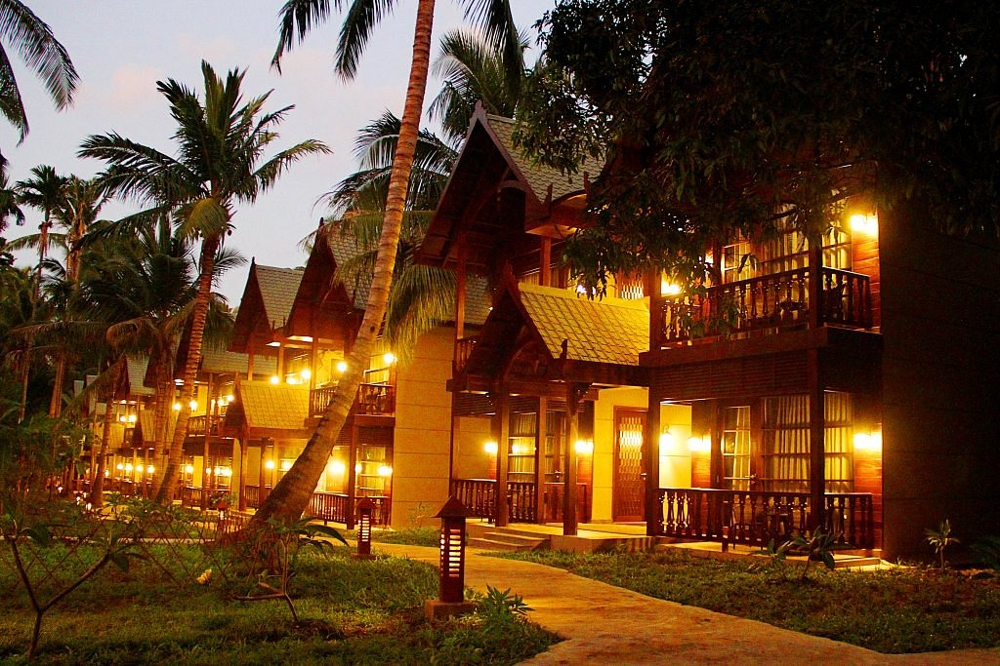

Andaman Islands, Andaman and Nicobar Islands, India
Located near Port Blair, North Bay is a secluded island which spans over a relatively medium area and is
generally visited by tourists on a day trip to both Ross Island and North Bay.The island is surrounded by
crystal clear cyan colored water with a shallow shoreline that offers a magnificent underwater view. The
beach is white sand and shaded by dense tropical trees with hints of huts and wooden benches to set the
mood.The island is most famous for water sports and features a plethora of vendors with great pricing
structure- if you are looking for some adventure and aren't afraid to get wet.

Considered an epitome of natural splendour, it is one of those numerous places where one can enjoy a combination
of peace and thrill. The experience of being at this place will gift you with a bundle of memories. While its
water sports will set your adrenaline pumping, you can also choose this destination to find an escape from the
boisterous city crowd. Yes, North Bay Island is truly a hub of natural beauty and if you are a nature lover, you
will be in awe of this place. As soon as you enter this island, you will find numerous scuba shops offering
snorkelling and scuba diving.
You can also avail glass bottom rides to get a close view of beautiful coral reefs. One must-do activity on this
island is a sea walk. This is because this island flaunts varieties of reefs and fishes which can’t be found in
most of the islands. The sea walk platoon is located nearby the island and their team will take you from the
island to platoon. Sea walking is done by wearing an oxygen helmet so that you can breathe easy.